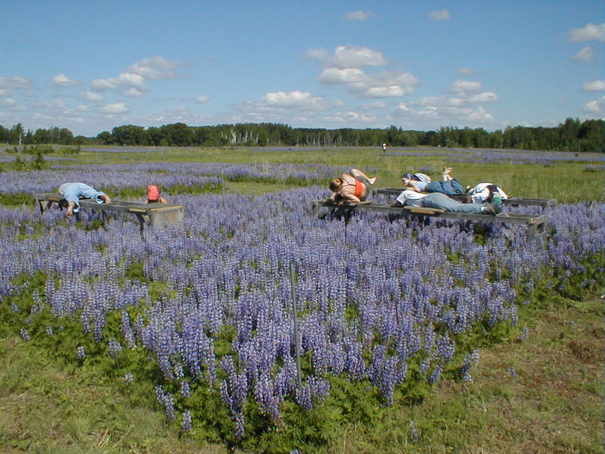

1 What is ecology?
Winston Churchill pointed out that “All the great things are simple, and many can be expressed in a single word—freedom, justice, honor, duty, mercy, hope.” Should we try to define these? Can we define them?
We should at least try to define our subject, ecology; many textbooks start with definitions. But first, for background, consider how we might define life. Marvin Minsky was an artificial intelligence researcher and computer scientist who thought about definitions. When is an object alive? Think about viruses, genes, self-reproducing machines—no one has really been able to give a good definition of “living” that satisfies in general. Some things are clearly living—mice—and some clearly are not—rocks. Lists of what makes something living used to appear in textbooks:
- Self-reproducing
- Responds to stimuli
- Metabolizes
- Made of protoplasm—protein, carbohydrates, DNA.
But (1) puts out the mule, (2) and (3) put out the spore, while if those conditions are dropped, (4) will admit the frankfurter. One can go on to extend the list with more careful qualifications, but questions remain until the list grows to include special mention of everything we can think of.
1.1 Definitions of ecology
With caveats in mind, consider definitions of ecology. In the 1860s, Ernst Haeckel combined the term oikos—a place to live, home, habitat—with logia—discourse, study—to coin the word “ecology.” In the 1890s Ellen Richards included humans and harmony, quite a modern view. Variations over the years are shown in Table 1.1.
| Author | Date | Definition |
|---|---|---|
| Haeckel | 1860s | The total relations of an organism to its organic and inorganic environment |
| Richards | 1890s | Living in harmony with the environment, first including family, then community, then the world and its resources |
| Elton | 1920s | Scientific natural history |
| Odum | 1960s | The study of the structure and function of nature, including the human species |
| Andrewartha | 1960s | The scientific study of the distribution and abundance of organisms |
| Krebs | The scientific study of the interactions that determine the distribution and abundance of organisms | |
| Molles | 1990s | The study of relationships between organisms and the environment |
| Eilts | 2010s | Life in context |
| Pope Francis | 2015 | The relationship between living organisms and the environment in which they develop |
Each of these definitions has merit, but the first two and the last two are closest to the way the term is applied in this book. We humans have become prominent in ecology, locally to globally. No modern treatment of ecology is complete without a strong dose of anthropology.
The definition by Andrewartha has been widely quoted, but focusing merely on distribution and abundance reduces ecology to mapping, which is why Krebs modified this definition. The Pope’s definition from his 2015 Encyclical includes the interesting idea of development, which can be taken to mean short-term development like embryogenesis and growth, plus long-term development like evolution. Overall, the definition by Eilts is perhaps the most general and engaging.
First and foremost, the most important concepts in ecology are about relationships, plus all of life, the whole environment, the processes of living and development, and, above all context. And in today’s world, harmony. But also consider, “Poetry is the subject of the poem” (Wallace Stevens, 1937) and perhaps “Ecology is what ecologists do.” With these in mind, we strive in the remainder of this book to define a theoretical form of ecology through examples and demonstrations, representative models and symbols, patterns and explanations, and lessons and caveats.

1.2 Ecology then and now
Our early hominin ancestors needed aspects of ecology. To find blueberries or other fruit, or where to dig wild onions, they had to know where these foods grew—their distribution and abundance. These parts of ecology have thus been part of life for hundreds of thousands of years. Ecology is connected with our species.
Some elements of the field of ecology were formalized more than 3000 years ago. The Rhind Papyrus (Figure 1.1) lists a number of ecological exercises for students—mathematics from ancient Egypt. Among these oldest ecological problems is this:
Number 27. If a mouse eat 521 ikats of grain each year and a cat kills 96 mice a year, in each of 24 barns, how many cats are required to control the destruction of stored grain?
— The scribe Ahmes, 1640 BC
This is a little problem in quantitative ecology! Even 36 centuries ago, mathematical ecology was part of life. Knowing how many grain bins determined how many cats were to be employed.
Today, ecology has become a glamour word. A product called “Ecogate,” for example, is part of a central vacuum system that keeps sawdust and sanding dust from being tracked around. But why the word Ecogate? Dust collection per se has nothing to do with ecology. Advertisers, however, have found that consumers respond positively to the term.
The term “ecosystem” is frequently used in business and finance, but there it means a collection of companies, customers, and products and their interconnections. For better or worse, ecological terminology is expanding to other domains.
1.3 Methods of ecology
How do ecologists do ecology? Often, they start with observation, then move to theory—trying to fit observations together to make sense as a whole. Theory then leads to expectations, which in turn lead to experiments. Commonly, experiments aren’t undertaken until there is some theory to be tested and understood.
- Observation
- Theory
- Experiment
- Serendipity
Observation, theory, and experiment, however, are not the whole story. A large part of science turns out to be serendipity—luck and chance—capitalizing on chance and doing something with it. One example is Alexander Fleming, who discovered penicillin. Some of the bacterial cultures in his lab became contaminated with penicillium mold and the cultures died. That ruined his experiment.
He could have written a memo to the laboratory staff ordering “Always keep mold away from our bacterial cultures. It destroys the cultures and will ruin the hypotheses we are trying to test.” But instead he capitalized on the serendipity, wondered what was happening, and found a substance in penicillium mold that kills bacteria. Fungi and bacteria have been archenemies for perhaps a billion years. Fleming’s discovery has helped physicians actually cure disease, rather than being limited to diagnosing and prognosticating.
Following up on chance is, then, a large part of science. By the way, for an interesting paper, read the original 1929 report by Fleming about penicillium. It is so understated. He writes “the name ‘penicillin’ has been given to filtrates of broth cultures of the mould.” No one had heard of the word before. Then he suggests that “it may be an efficient antiseptic.” One of the greatest discoveries of all time and only, “it may be an efficient antiseptic.”
Cedar Creek is a University of Minnesota research site about thirty miles north of the University’s Saint Paul campus, and is one of the classic ecological research sites in the world. Pictured in Figure 1.2 is an experiment set up by Prof. David Tilman. While very carefully designed, it came about because of serendipity—the chance event of a deep two-year drought that altered the abundances of species in a particular way and triggered the idea for this experiment.
Keep your eyes open for such chance events; they can crop up anywhere.
